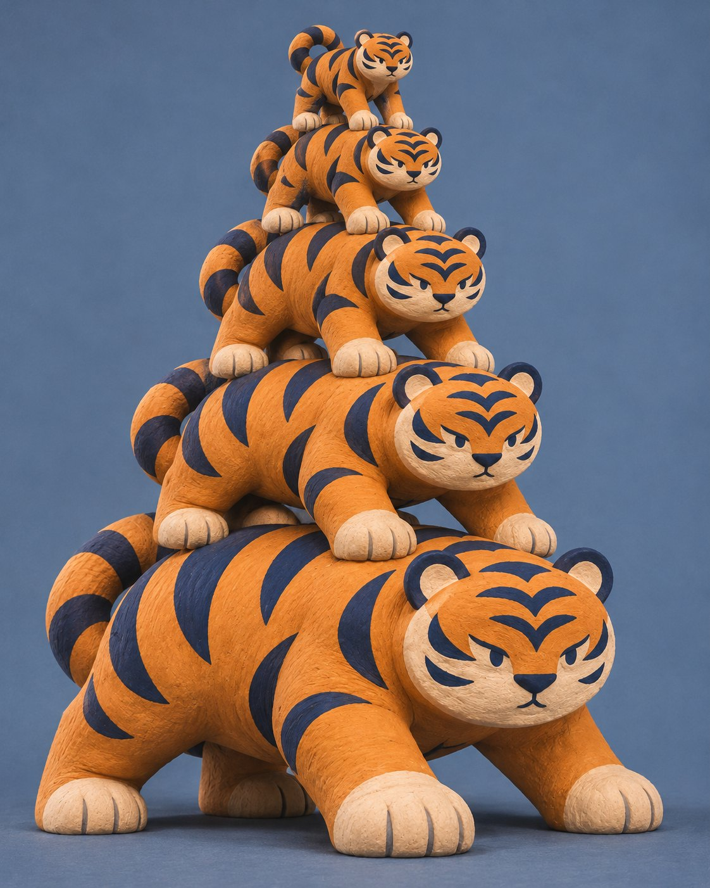
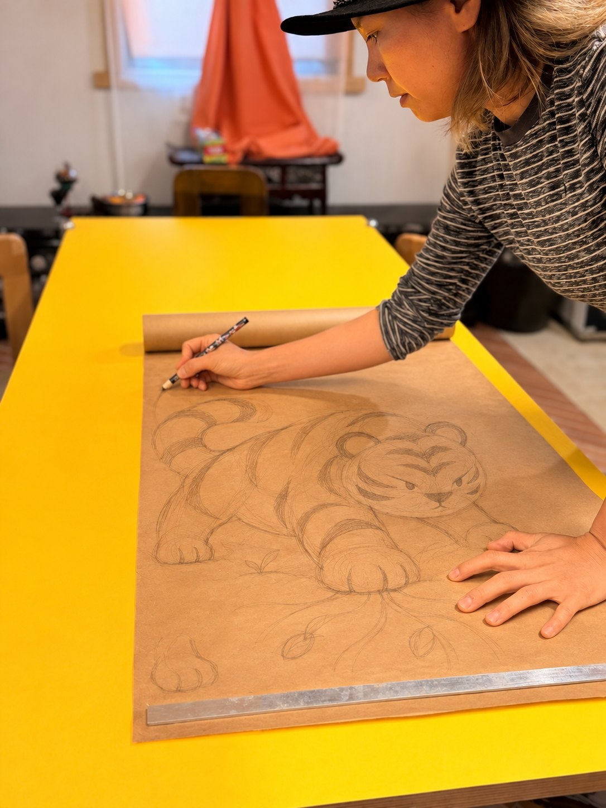
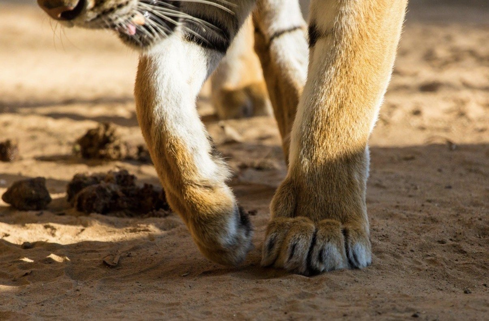
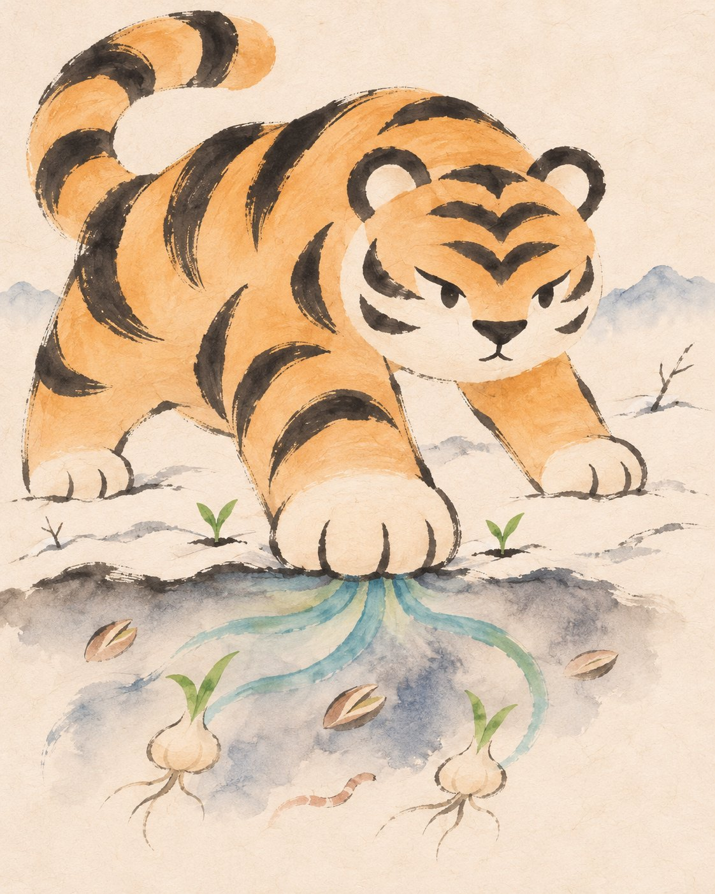
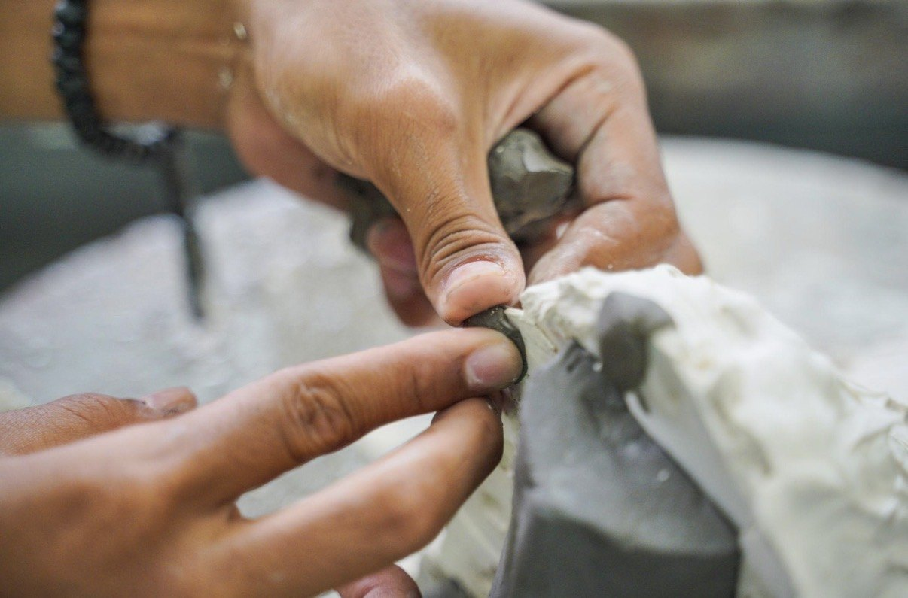

대지를 깨우는 호랑이
조각가 최희원이 입춘에서 떠올린 호랑이
조각가 최희원 인터뷰 · 1080×1350 (4:5) 인스타그램 규격

조각가 최희원이 입춘에서 떠올린 호랑이

십이지의 동물을 통해 계절의 변화와 생명의 움직임을 조각으로 표현하는 최희원입니다.
동물마다 고유한 몸짓과 성격을 계절 속 여러 힘과 연결하고 있어요. 지금은 2월, 입춘에서 떠올린 호랑이를 만들고 있습니다.

호랑이라고 하면 보통 날카로운 이빨이나 위엄 있는 모습, 강한 힘을 떠올리죠. 저는 그 힘이 무엇을 향하는지에 관심이 있었어요.
입춘은 아직 추위가 남아 있지만, 그 안에서 새로운 계절이 시작되는 때잖아요. 저는 얼어붙은 땅 아래에서 생명이 다시 움직일 준비를 하는 모습을 떠올렸어요.

그 움직임을 처음 일으키는 힘에
호랑이의 몸을 부여하고 싶었습니다.

그래서 발의 움직임이나 몸의 긴장감이 중요해요. 두 계절을 한 동작에 함께 담고 싶습니다.
미뤄 두었던 일을 다시 시작하게 되기도 하고요. 저에게도 그런 만남들이 있었어요.
대지를 깨우는 기운처럼, 사람에게도 서로의 가능성을 깨워 주는 힘이 있다고 생각해요.
— 조각가 최희원
각 카드의 PNG 파일(1080×1350)은 저장소의 cardnews-tiger/png/ 폴더에 있습니다.